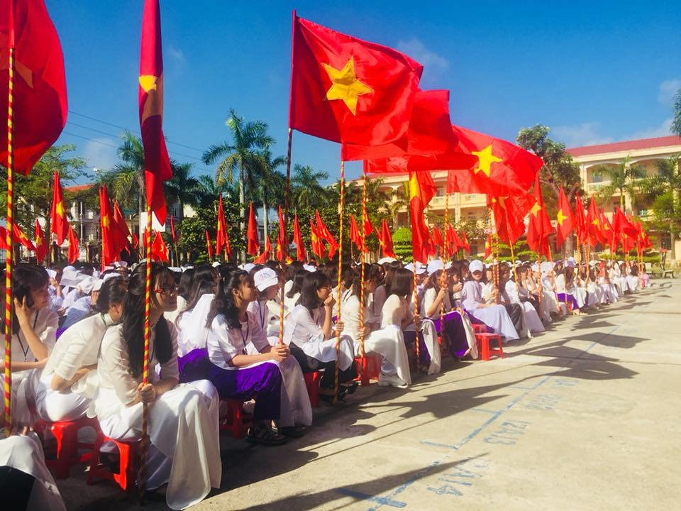

LỄ KHAI GIẢNG NĂM HỌC MỚI 2018-2019
Hòa chung không khí tưng bừng của cả nước trong những ngày thu lịch sử, thực hiện sự chỉ đạo của Sở GD&ĐT Thái Bình, sáng ngày 05/ 09/ 2018. Trường THPT Bắc Đông Quan long trọng tổ chức lễ khai giảng năm học mới, năm học 2018 – 2019.
Tới dự lễ khai giảng và chúc mừng thầy trò nhà trường nhân dịp năm học mới có Đ/c: Đỗ Xuân Thành, Ủy viên Ban Thường vụ, Trưởng ban Tổ chức Tỉnh ủy cùng lãnh đạo Sở Giáo dục và Đào tạo; Đ/c Nguyễn Tiến Hưng phó bí thư huyện Ủy- chủ tịch UBND huyện Đông Hưng; các Đ/c đại diện các phòng ban chuyên môn của tỉnh Ủy- HĐND – UBND tỉnh Thái Bình và huyện Đông Hưng; các thầy giáo nguyên Hiệu trưởng trường THPT Bắc Đông Quan qua các thời kì; ban đại diện hội cha mẹ học sinh và sự tham dự đầy đủ của 99 cán bộ giáo viên, công nhân viên cùng 1958 học sinh toàn trường.
Sau lễ chào cờ, thầy Phan Văn Đức - Bí thư chi bộ, Hiệu trưởng nhà trường đã đọc thư chúc mừng của Chủ tịch nước nhân dịp khai giảng năm học 2018-2019 và diễn văn khai trường. Bài diễn văn đặc biệt chú trọng đến việc tiếp tục triển khai có hiệu quả những nhiệm vụ, giải pháp đổi mới căn bản, toàn diện giáo dục, đào tạo của ngành, gắn với nhiệm vụ cụ thể của nhà trường năm học 2018- 2019.
Năm học 2017 - 2018 là năm thứ 7 liên tiếp Trường THPT Bắc Đông Quan đạt tiên tiến xuất sắc, được UBND tỉnh tặng bằng khen. Năm học vừa qua, 100% học sinh nhà trường đỗ tốt nghiệp THPT, vượt bình quân của tỉnh 0,66%; học sinh đỗ đại học nguyện vọng 1 đạt 78,85%, trong đó có 28 em đạt bình quân trên 8 điểm/môn.
Tại buổi lễ, thừa ủy quyền của Tỉnh ủy, HĐND, UBND tỉnh, đồng chí Đỗ Xuân Thành, Ủy viên Ban Thường vụ, Trưởng ban Tổ chức Tỉnh ủy đã trao Bằng công nhận đạt chuẩn quốc gia giai đoạn 2018 - 2023 cho Trường THPT Bắc Đông Quan. Phát biểu tại buổi lễ, đồng chí Trưởng ban Tổ chức Tỉnh ủy ghi nhận, biểu dương những kết quả mà thầy và trò Trường THPT Bắc Đông Quan đã đạt được trong năm học qua. Đồng chí đề nghị tập thể cán bộ, giáo viên, học sinh nhà trường tiếp tục duy trì nền nếp, kỷ cương, đổi mới phương pháp dạy và học; tiếp tục thực hiện tốt việc học tập và làm theo tư tưởng, đạo đức, phong cách Hồ Chí Minh. Đồng chí mong muốn các bậc phụ huynh quan tâm, phối hợp với nhà trường trong quản lý học sinh; các em học sinh cần xác định rõ mục đích học tập để lập thân, lập nghiệp, rèn luyện lối sống lành mạnh, phấn đấu trở thành công dân có ích cho xã hội.
Hướng tới mục tiêu khuyến học, khuyến tài, trong buổi lễ, nhà trường đã tổ chức khen thưởng những học sinh đỗ thủ khoa kì thi THPT Quốc gia và kì thi tuyển sinh lớp 10 trong năm học 2018-2019.
8h 30 phút, lễ khai giảng kết thúc sau những tiết mục văn nghệ vô cùng đặc sắc của cả thầy và trò nhà trường. Buổi lễ diễn ra ngắn gọn nhưng trang trọng, đầy ý nghĩa, đã góp phần tạo nên tâm trạng vui tươi phấn khởi, tâm thế vững vàng cho thầy và trò nhà trường bước vào năm học mới với nhiều thắng lợi mới.
Dưới đây là một số hình ảnh trong buổi lễ khai giảng năm học mới, năm học 2018-2019:
